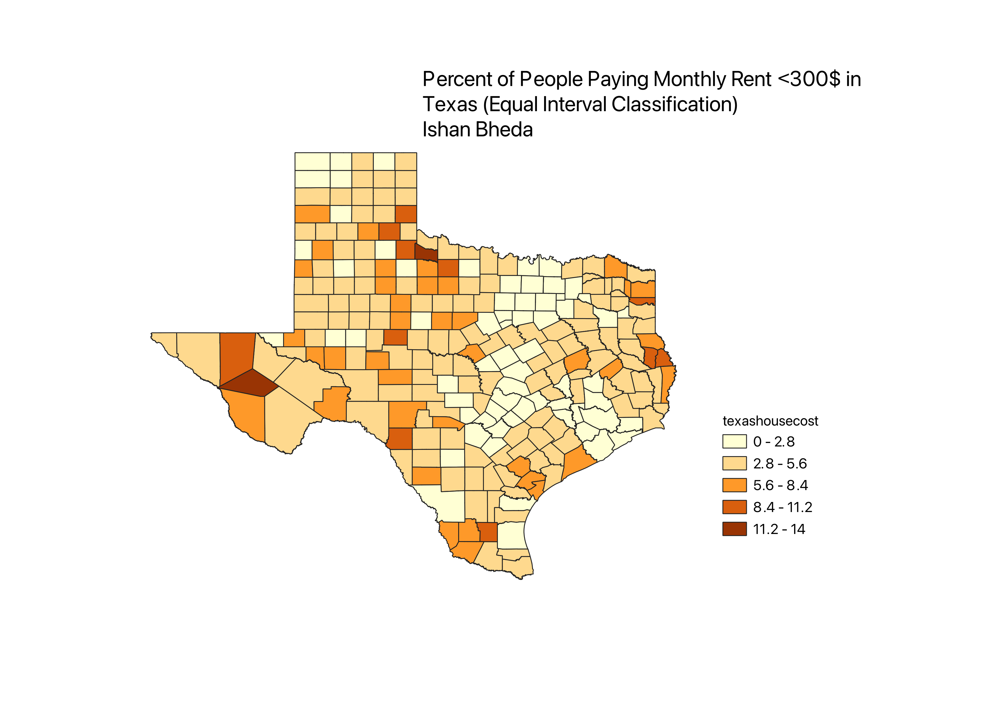
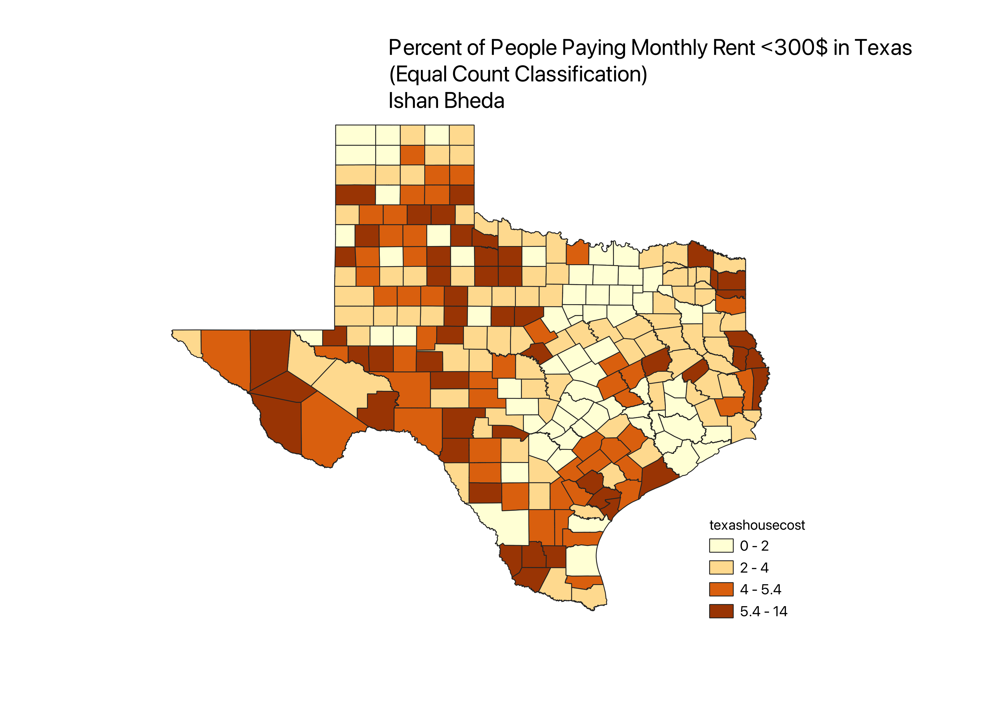

The Natural Breaks method served well in this map to show a lot of geographic variety. I like how it shows many different examples of each different class. However, one drawback is that the classes are uncevenly distributed with the last two being larger than the others. This makes the data harder to read and more vague within the higher classes.
The Equal Interval method was my personal favorite due to it's simplicity on this map. The equal counts for all of the data makes it much easier to read and much simpler in the eye of the viewer. The drawbacks are that a lot of the data ends up falling into the second class. Also the first 3 classes are bigger than the natural breaks method so the data is slightly more vague at the lower level.
The Equal Count (Quantile) Method of classification was the my least favorite by far for this excercise. The only real benefit I can see opposed to the others is that the third class is more specific. However, the last class has a huge range and is extremely vague. This method also forced 4 classes despite me specifying 5, due to one of the classes being exactly 4.